LoRA — Low-Rank Adaptation
Freeze the base model. Train two tiny matrices whose product approximates the weight update. A Post-it note for a 135M-parameter brain.
The one-liner “LoRA is the fine-tuning equivalent of teaching a 135M-parameter model new tricks with 460,000 parameters. That is fewer parameters than a decent Wordle guess, and yet somehow it works well enough that the entire NLP field pivoted to it in about 18 months.”
How it works
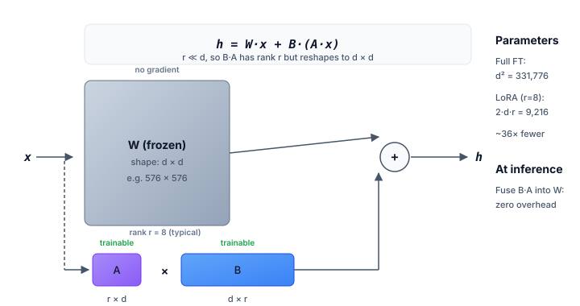
A dense weight matrix in a transformer has shape d × d. Full fine-tuning updates every entry —
that is d² gradients per layer, per step. LoRA instead trains two much smaller matrices,
A of shape r × d and B of shape d × r, and reconstructs the
weight update as B·A. The base W stays frozen.
With r = 8 and d = 576, that is 36× fewer trainable parameters per
matrix. Because the update is a low-rank decomposition, you can fold B·A back into W
at deployment time and pay zero inference overhead. The model looks and runs like the base,
but behaves like the fine-tune.
The math (four lines, no cheating)
alpha is a scaling knob (we use 16 with r=8). Higher alpha = larger effective update
magnitude. The ratio alpha / r keeps behavior consistent when you sweep r.
When to reach for it
- You have less than 24 GB of VRAM (or you rent by the hour).
- You want to keep the base model reusable — one base, many adapters.
- You are teaching a style, format, or task, not new world knowledge.
- You need adapters you can ship separately from the base model.
- You want to fuse the update into W at deployment for zero overhead.
- The task genuinely needs new factual knowledge that is not in the base.
- You have infinite budget and want the last 0.5% of quality.
- Rank capacity is too small for the task — solved by raising
r, not by giving up. - You are aligning behavior to preferences — use DPO instead.
The code — copy and go
What actually happened when we ran it
On SmolLM2-135M-Instruct with a 24-example medical QA dataset, LoRA lifted ROUGE-1 from 0.44 to 0.67 with 460K trainable parameters (out of 135M). Full fine-tuning got 0.71 with 300× more trainable parameters and ~10× the peak memory. That's the trade.
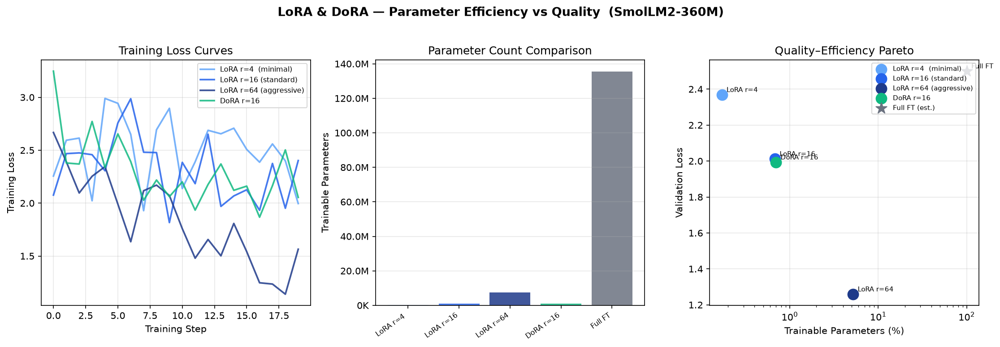
Two lessons from actually running it
SFTTrainer quietly enables checkpointing. When you call model.generate(),
transformers detects checkpointing is on and forces use_cache=False. Every generated
token then re-runs the full forward pass. Output looks like garbage. Fix:
model.gradient_checkpointing_disable(); model.config.use_cache = True.
We rediscovered this bug three times before writing it down.
Training with plain "Topic: X\nAnswer:" completion format on
SmolLM2-Instruct silently underperforms because the model is trained to expect ChatML.
Always call tokenizer.apply_chat_template([...]). The results table gets a lot
nicer after this.
See also
- DoRA — LoRA plus a magnitude vector; sometimes better, always heavier.
- QLoRA — LoRA on a 4-bit-quantized base for 7B+ models on consumer GPUs.
- Comparison — LoRA on the Pareto chart against the other nine.
- Failure points — how LoRA training loses its mind.
DoRA — Weight-Decomposed Low-Rank Adaptation
LoRA plus a magnitude vector. Same low-rank trick for direction, separate scalar for magnitude. Sometimes a real improvement. Always a tiny bit heavier.
The one-liner “DoRA looked at LoRA and said ‘what if we also had opinions about magnitude?’. The paper claims consistent gains over LoRA. Our experiments say it's slightly better, slightly slower, and completely worth trying whenever LoRA is already on the table.”
How it works
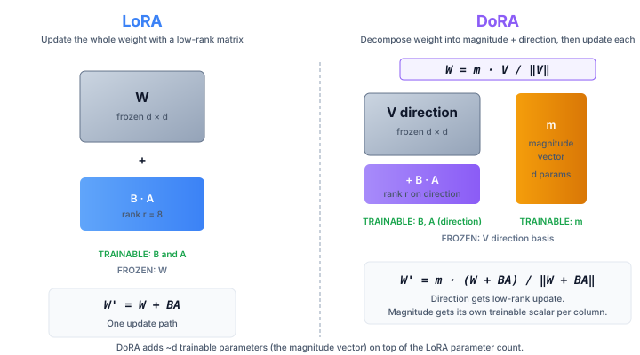
DoRA decomposes each pretrained weight W into a magnitude vector m and a
direction matrix V / ||V||. The direction gets the LoRA treatment (low-rank update). The
magnitude vector is trained directly (it's tiny). The intuition: LoRA can only rotate; DoRA can rotate
and stretch. When a task needs both, DoRA wins.
The math
Underlined terms are trainable. ||V||c is the column-wise norm. The magnitude vector m adds d parameters per matrix on top of the LoRA count.
When to reach for it
- You're already running LoRA and want a small, reliable quality bump.
- The task involves magnitude information (e.g. calibration, confidence).
- Your dataset is small enough that a few extra parameters won't overfit.
- Every millisecond of training time matters — DoRA is 15-25% slower.
- You need to fuse adapters at inference — DoRA fusion is more finicky.
- Vanilla LoRA already saturates your metric.
The code
What actually happened when we ran it
QLoRA — LoRA on a 4-bit-quantized base
Compress the frozen base to 4-bit NF4, LoRA on top. A 7B model now fits in 6 GB. The technique that made fine-tuning accessible to people without cloud budgets.
The one-liner “QLoRA compressed the base to 4 bits and still got the same answers. Some questions do not need 32 bits of confidence. A 7B model that used to need a datacenter now runs on a gaming laptop, and you barely lose any quality doing it.”
How it works
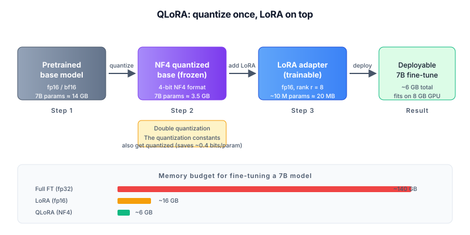
Three components: (1) NF4 quantization — a 4-bit floating-point format shaped for the actual distribution of neural network weights (not uniform). (2) Double quantization — even the quantization constants get quantized (saves an extra ~0.4 bits per parameter). (3) Paged optimizers — when the CPU RAM overflows, unified memory pages spill to swap without crashing. Then you just LoRA on top. The base stays frozen and quantized; only the LoRA adapters train in fp16.
The math you actually care about
| Approach | Weights | Optimizer state | Total (approx) |
|---|---|---|---|
| Full FT (fp32) | 28 GB | 112 GB | ~140 GB |
| LoRA (fp16) | 14 GB | 0.2 GB | ~16 GB |
| QLoRA (NF4) | 3.5 GB | 0.2 GB | ~6 GB |
When to reach for it
- Your base model doesn't fit in your GPU at fp16.
- You're fine-tuning a 7B or larger model on consumer hardware.
- You want to iterate on adapters quickly — the base loads once, stays quantized.
- You need CUDA. QLoRA on MPS falls back to standard LoRA (no bitsandbytes on Apple Silicon).
- Your base already fits in memory at fp16 — use plain LoRA.
- You're on Apple Silicon (MPS has no NF4 kernels; use QLoRA on CUDA or fall back to LoRA).
- You need the absolute highest quality — NF4 loses a small but measurable amount.
The code
What actually happened when we ran it
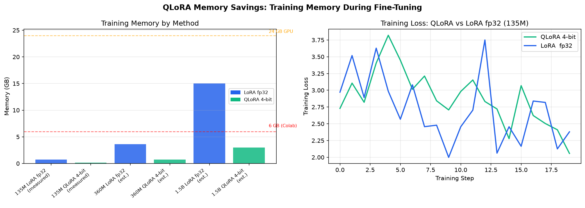
Full Fine-Tuning
Every parameter trainable. Every gradient computed. Every byte of VRAM used. The reference point that every other technique compares itself to — and the one that eats the most compute doing it.
The one-liner “Full fine-tuning is the reigning champion of every leaderboard and the reigning glutton of every hardware bill. It works. It always works. It just wants everything in the fridge to work.”
How it works
Take a pretrained model. Unfreeze every parameter. Train it on your task with a small learning rate (usually 10× to 100× smaller than pretraining). Every weight is updated. Every optimizer state (usually Adam: two extra tensors per weight) lives in memory. This is what “fine-tuning” meant before 2021.
The math
All of them. Every layer, every head, every embedding. If it has a gradient, it moves.
When to reach for it
- You have unlimited compute (or someone else's budget).
- You need the last 0.5% of quality that PEFT can't reach.
- You're establishing the ceiling before comparing PEFT variants.
- Your task requires fundamental shifts in the model's knowledge.
- You want the same model reusable across tasks — use LoRA adapters.
- Your VRAM is under 40 GB and your model is over 3B.
- Your dataset is under 1000 examples — you'll overfit.
- You need to ship separate task-specific weights — adapters are 1000× smaller.
The code
What actually happened when we ran it
Notebook 02 ran a 1-epoch full fine-tune on SmolLM2-135M with a 200-example medical QA dataset. Peak VRAM: about 45 GB (fp32, optimizer states, gradients). Result: ROUGE-1 = 0.71. LoRA reached 0.67 with 300× fewer trainable parameters and ~10× less memory. Which is why LoRA exists.
Linear Probing / Feature Extraction
Freeze the base entirely. Train a linear classifier on the hidden states. The cheapest way to test what a pretrained model already knows about your task.
The one-liner “Linear probing asks ‘does the base model already know this?’ and answers in under a minute. When the answer is yes, you just saved yourself a whole training run. When the answer is no, you know to escalate to LoRA and stop feeling bad about it.”
How it works
Extract hidden states from the base model (frozen). Feed them into a small classifier (typically a
linear layer). Train only the classifier. The base never sees a gradient. Total trainable parameters:
hidden_dim × num_classes. For SmolLM2-135M classifying 5 categories: 2,880 parameters.
You can train this in your lunch break.
The math
Where h(x) comes from the frozen base and only
W, b are trained. Two tensors. That's it.
When to reach for it
- You're doing classification and want to test whether pretraining already learned the distinction.
- You want an interpretable, controlled comparison baseline.
- You need something you can retrain in minutes as new labels arrive.
- You're studying which layers encode which features.
- Your task is generative — you need to change the output distribution.
- The base model has no idea about your domain — use LoRA.
- You need nonlinear feature combinations — a linear head can't model them.
The code
What actually happened when we ran it
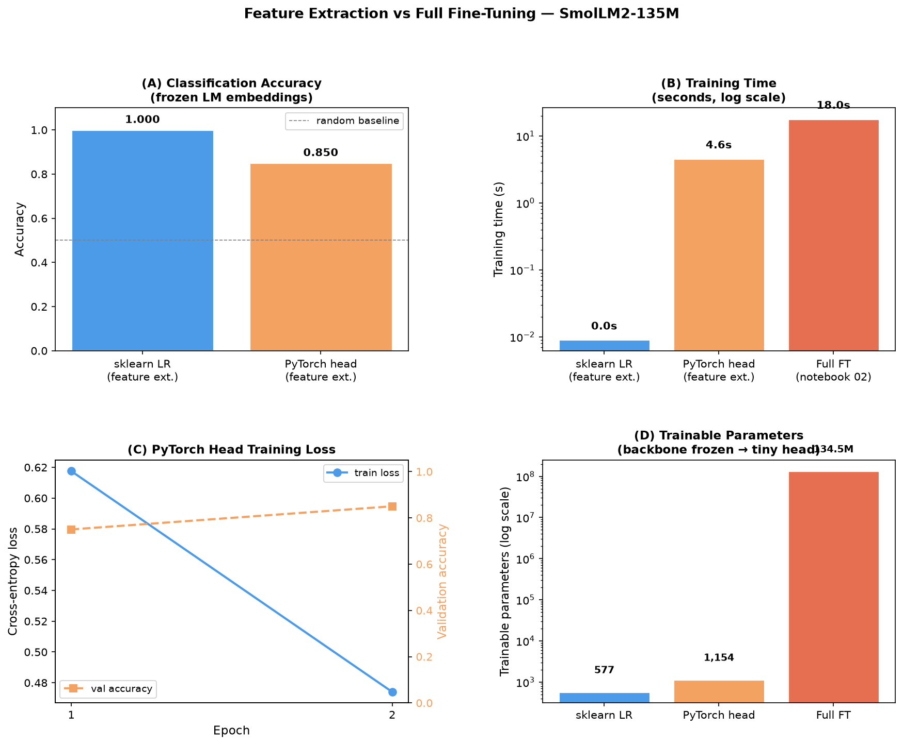
Prompt Tuning
Learn a handful of virtual tokens that live in embedding space. Not real words. Not English. Just vectors that the model has been convinced belong at the front of the sequence.
The one-liner “Prompt tuning learned 20,000 parameters worth of virtual tokens. It works. Sometimes. On the right task. When it works, it's the most parameter-efficient technique in the whole tutorial. When it doesn't, it fails silently and produces plausible-looking garbage.”
How it works
Prepend n learnable embedding vectors to your input token embeddings. Freeze the base. Train only those n vectors. For SmolLM2 with 20 virtual tokens: 20 × 576 = 11,520 parameters. The model treats these virtual tokens as if they were real words — and the training loop convinces them to be helpful ones.
The math
Where Pi are the learned prompt vectors
and E(xt) are the frozen embeddings of your input tokens. Only P gets gradients.
When to reach for it
- You have a very narrow task (single format, single domain).
- You have less than 100 training examples and want to avoid overfitting.
- You need extreme parameter efficiency (embedded systems, storage limits).
- Scale is large — prompt tuning gets much better with model size.
- Your task requires updates deeper than the input layer — use prefix tuning or LoRA.
- The model is under 1B parameters — the technique underperforms at small scale.
- You need to adapt to a new output distribution significantly.
The code
What actually happened when we ran it
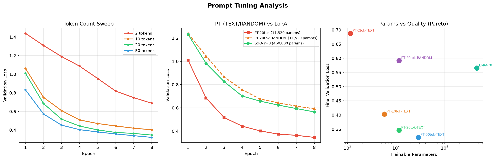
Prefix Tuning
Prompt tuning at every layer. Instead of prepending soft tokens to the input, we prepend them to the attention keys and values in every transformer block. More expressive, still very small.
The one-liner “Prefix tuning is prompt tuning that got a promotion to management. Instead of whispering a suggestion at the front door, it walks the halls at every floor. Slightly more expressive, still remarkably cheap.”
How it works
Rather than prepending soft tokens to just the input embeddings, prefix tuning prepends learnable vectors to the keys and values of the self-attention layer — at every layer of the transformer. Each layer gets its own set of prefix vectors, giving the model more “steering room” than plain prompt tuning without touching any actual weights.
The math
Trainable parameters: 2 × L × nprefix × d
where L is the number of layers. For 30 layers with 5 prefix tokens: 30 × 2 × 5 × 576 = 172,800.
When to reach for it
- Prompt tuning was not expressive enough for your task.
- You want per-layer steering without adding weight updates.
- The base is small (under 1B) — prefix tuning does better than prompt tuning at this scale.
- You need adapters that stay tiny (a few tens of KB on disk).
- LoRA already works — it's a more general solution with similar cost.
- You need the KV cache during inference to be small (prefix inflates it).
- Your task requires updating attention output projections, not just inputs.
The code
What actually happened when we ran it
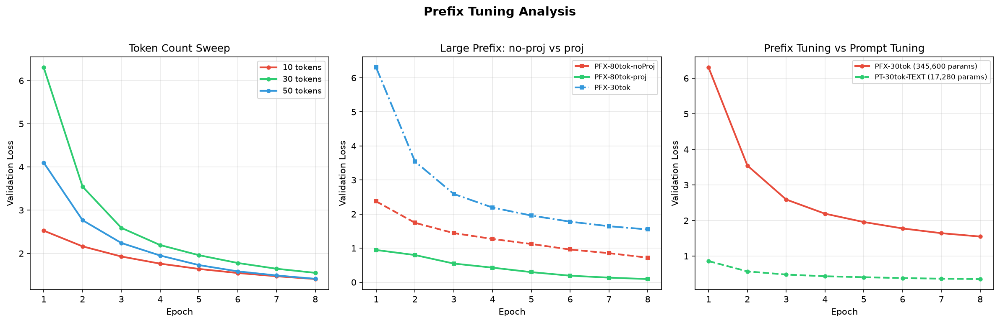
DPO — Direct Preference Optimization
Teach the model “this answer is better than that answer” without a reward model, without RL, and without an existential crisis. Preference pairs go in. Aligned model comes out.
The one-liner “DPO taught the model that vivid narration beats flat narration. Loss went below log 2. It has opinions now. Where PPO required a reward model, three moving loss terms, and a philosophy degree, DPO requires preference pairs and a training loop.”
How it works
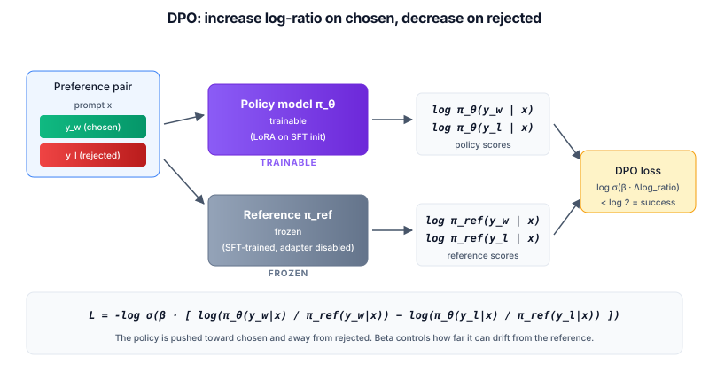
You provide pairs of outputs for the same prompt: one “chosen” (better), one “rejected” (worse).
DPO derives a loss that pushes the policy's log-probability of chosen outputs above rejected ones,
while a KL-divergence term (controlled by β) keeps the policy close to a reference model
so it doesn't drift into gibberish. That's the whole idea. No reward model. No RL. Just supervised learning
on ranking.
The math
πθ is the trainable policy. πref is the frozen SFT reference.
yw is the chosen output, yl is the rejected one.
β (typically 0.1) controls how far the policy can drift from reference.
Loss below log 2 ≈ 0.693 means the model has genuinely learned the preference.
When to reach for it
- The problem is preference, not capability — the model can produce good outputs sometimes.
- You have (or can generate) chosen/rejected pairs for the same prompt.
- You want alignment: tone, refusal behavior, hallucination reduction, style bias.
- You already ran SFT and want to sharpen the model's judgment.
- The base model can't produce plausible outputs at all — SFT first.
- You don't have preference pairs and can't generate them.
- Your task needs new knowledge, not sharper preferences — use LoRA/full FT.
- Model is under 500M and the task is highly creative — capacity matters more than alignment.
The code
What actually happened when we ran it
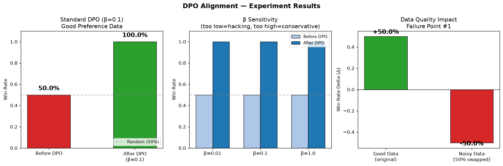
Knowledge Distillation
A big model tutors a small model. The small model learns to imitate the big one's output distribution — not just the labels, but the shape of the probability mass over all vocabulary.
The one-liner “Knowledge distillation is what you do when you built a beautiful, expensive model and your production budget is asking hard questions. The teacher labels a corpus with soft probabilities; the student learns to imitate; ship the student. Everyone wins except the electricity company.”
How it works
Two models: a “teacher” (large, expensive, high-quality) and a “student” (small, cheap, being trained). For each training example, run the teacher to get its logits (or soft probabilities via softmax with temperature). Train the student to match those soft probabilities, not just the hard labels. The temperature-softened distribution carries much richer signal than one-hot labels — it tells the student not just “this is the right answer” but “these are the near-misses and by how much”.
The math
T is the temperature (usually 2-4). Higher T softens the distribution and reveals more nuance.
α balances between mimicking the teacher and matching the true labels. The T²
factor corrects the gradient magnitude that softmax scaling would otherwise reduce.
When to reach for it
- You have a working large model and need something cheaper to serve.
- Inference latency and cost matter more than the last percent of quality.
- You want to shrink a fine-tuned model into a smaller architecture.
- Your compute is asymmetric — training is fine, serving is expensive.
- You don't have a well-performing teacher yet — build one first.
- The size gap is too large — a 70B teacher into a 135M student loses too much.
- The teacher itself is small enough to ship — just ship it.
The code
What actually happened when we ran it
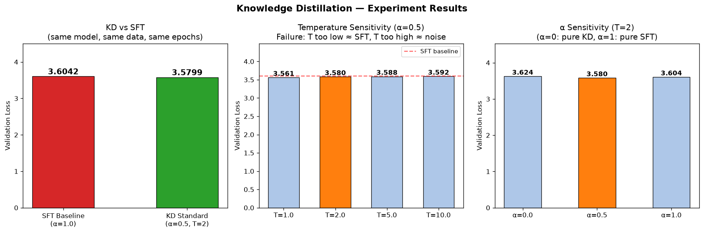
Model Merging — SLERP, TIES, DARE
Combine multiple fine-tuned models by averaging weights in clever ways. No training. No data. Sometimes the merged model outperforms both parents. It sounds like alchemy. It is not.
The one-liner “Model merging finished in six seconds. Because it did not train. That is the whole trick, and it is genuinely a free lunch: two fine-tunes go in, a combined model comes out, and sometimes it's better than either parent on the union of their tasks.”
How it works
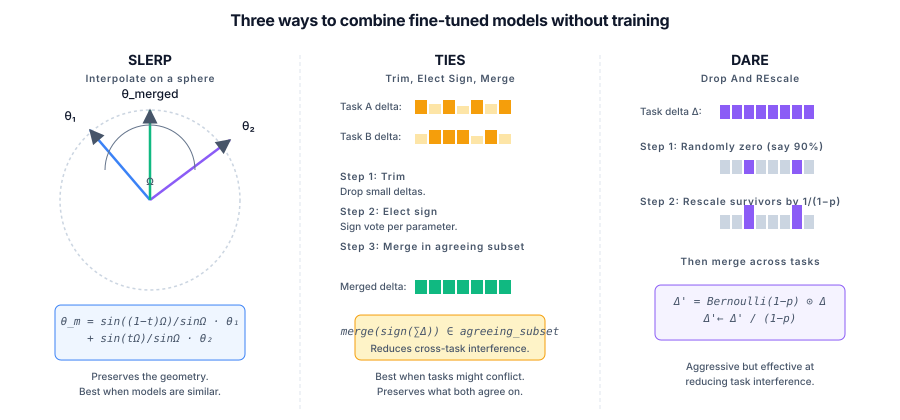
Given two (or more) fine-tuned models with the same architecture and base, combine their weights via one of three families of methods:
- SLERP (Spherical Linear Interpolation): interpolate on the hypersphere between the two weight vectors. Preserves the geometry of the parameter space better than linear averaging.
- TIES (TRIm, Elect Sign, Merge): trim small-magnitude parameter deltas, elect a sign per parameter based on agreement, and merge only within the agreeing subset. Reduces conflict between fine-tunes.
- DARE (Drop And REscale): randomly zero out most parameter deltas and rescale the rest. Aggressive but effective at reducing interference.
The math
Where Ω is the angle between θ1 and θ2, and t ∈ [0, 1] is the interpolation coefficient. Linear averaging is the special case when the vectors are nearly parallel.
When to reach for it
- You have two fine-tunes trained on related but distinct tasks.
- You want to test compositions without paying for more training.
- You want a model that spans both domains without catastrophic forgetting.
- You want to explore the parameter space cheaply.
- Your fine-tunes solve conflicting tasks — merged models can regress on both.
- The fine-tunes started from different bases — results are unpredictable.
- You need guaranteed behavior — the merged model needs to be evaluated fresh.
The code
What actually happened when we ran it
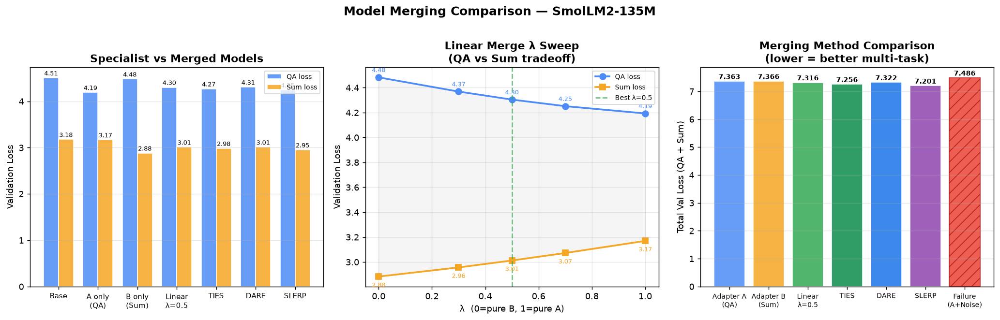